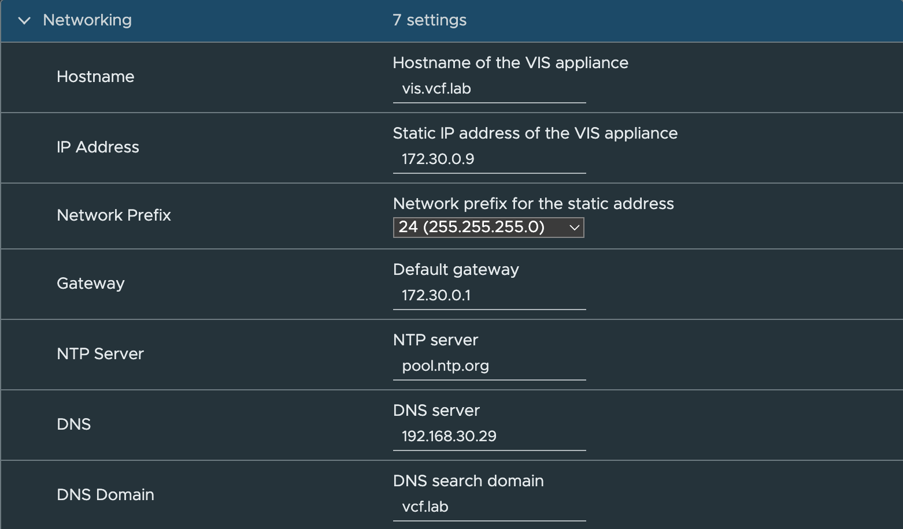
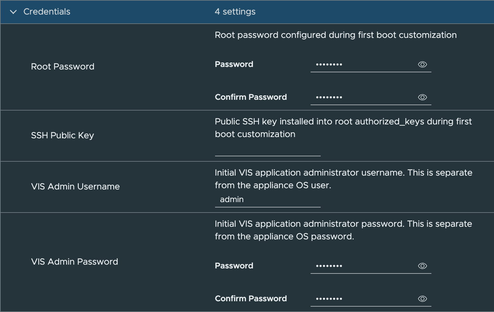
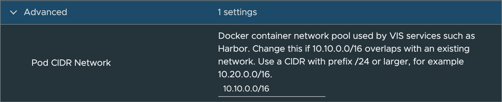
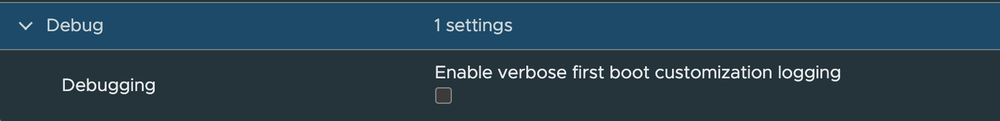

Deploy
Deploy the VIS OVA to either a vCenter Server or a standalone ESX host. OVF properties are used to set up the initial appliance, including basic networking information, OS credentials, VIS application credentials, an optional SSH public key, and the Docker pod CIDR.
Table of Contents
- Resource Requirements
- Download Split OVA from GitHub
- vCenter Server Deployment
- Standalone ESX Deployment with OVF Tool
Resource Requirements
VIS requires the following minimum virtual hardware:
| Resource | Minimum |
|---|---|
| CPU | 2 vCPU |
| Memory | 4 GB |
| Storage | 30 GB minimum |
Storage consumption will increase based on which services are enabled and how they are used. Software Depot, Container Registry, and backup repository usage can grow significantly as VCF bundles, container images, and backup artifacts are added.
Download Split OVA from GitHub
GitHub release assets have a file size limit, so VIS release OVAs may be published as split parts. Download every part and the checksum manifest before reconstructing the OVA.
Example release assets:
vcf-infrastructure-services-appliance-1.0.1.ova.part-aa
vcf-infrastructure-services-appliance-1.0.1.ova.part-ab
vcf-infrastructure-services-appliance-1.0.1.ova.part-ac
vcf-infrastructure-services-appliance-1.0.1.ova.sha256
vcf-infrastructure-services-appliance-1.0.1.ova.parts.sha256Verify the downloaded parts first:
shasum -a 256 -c vcf-infrastructure-services-appliance-1.0.1.ova.parts.sha256Reconstruct the OVA:
- Linux/macOS
cat vcf-infrastructure-services-appliance-1.0.1.ova.part-* > vcf-infrastructure-services-appliance-1.0.1.ova- Windows PowerShell
cmd /c 'copy /b vcf-infrastructure-services-appliance-1.0.1.ova.part-a* vcf-infrastructure-services-appliance-1.0.1.ova'Verify the reconstructed OVA before importing it:
shasum -a 256 -c vcf-infrastructure-services-appliance-1.0.1.ova.sha256The final checksum must pass before deploying the OVA. If it fails, delete the reconstructed OVA, re-download the failed part listed by shasum, and repeat the verification.
Release maintainers can create the split files and checksums with:
cd output-vmware-iso
shasum -a 256 vcf-infrastructure-services-appliance-1.0.1.ova > vcf-infrastructure-services-appliance-1.0.1.ova.sha256
split -b 1900m vcf-infrastructure-services-appliance-1.0.1.ova vcf-infrastructure-services-appliance-1.0.1.ova.part-
shasum -a 256 vcf-infrastructure-services-appliance-1.0.1.ova.part-* > vcf-infrastructure-services-appliance-1.0.1.ova.parts.sha256vCenter Server Deployment




Standalone ESX Deployment with OVF Tool
For environments without vCenter Server, use the sample OVF Tool script:
Step 1 - Make a local copy of the deployment script
cp scripts/deploy_vis_esx.sh scripts/deploy_vis_esx.local.shStep 2 - Edit the variables based on your environment
OVFTOOL="/Applications/VMware OVF Tool/ovftool"
VIS_OVA="./output-vmware-iso/vcf-infrastructure-services-appliance-1.0.1.ova"
# ESX deployment target
ESX_HOST="172.30.0.10"
ESX_USERNAME="root"
ESX_PASSWORD="VMware1!"
VM_NETWORK="VM Network"
VM_DATASTORE="local-vmfs-datastore-1"
VM_NAME="vis"
# VIS appliance networking
VIS_FQDN="vis.vcf.lab"
VIS_IP="172.30.0.9"
VIS_NETMASK="24 (255.255.255.0)"
VIS_GATEWAY="172.30.0.1"
VIS_DNS_SERVER="192.168.30.29"
VIS_DNS_DOMAIN="vcf.lab"
VIS_NTP_SERVER="pool.ntp.org"
# Appliance OS credentials
VIS_ROOT_PASSWORD="VMware1!"
# Optional root SSH public key. Leave empty to skip.
VIS_SSH_PUBLIC_KEY_FILE=""
# VIS web application administrator credentials.
# This is separate from the appliance OS/root credential.
VIS_ADMIN_USERNAME="admin"
VIS_ADMIN_PASSWORD="VMware1!"
# Advanced: Docker container address pool used by VIS services such as Harbor.
# Change this if 10.10.0.0/16 overlaps with your lab network.
VIS_POD_CIDR_NETWORK="10.10.0.0/16"
# Enable verbose first-boot logging. Debug logs may include credentials.
VIS_DEBUG="false"Step 3 - Run the script
./scripts/deploy_vis_esx.local.shThe script deploys directly to a standalone ESX host and passes the required guestinfo.* OVF properties that VIS consumes during first boot customization.
All VIS services are disabled by default. Users will need to configure and enable only the services they require. Please see the Usage page for some examples.